Translate a classic circuit into a buildable object.
I used the Klon Centaur as a reference, translating its circuit into a PCB and designing an enclosure around the physical constraints of the board, controls, and audio connections.
Hardware · Audio · Fabrication
A custom guitar overdrive pedal inspired by the Klon Centaur — from circuit analysis and PCB layout to hand soldering and a 3D-printed enclosure.
Independent projectKiCad · FreeCAD · Electronics assembly · 3D printing
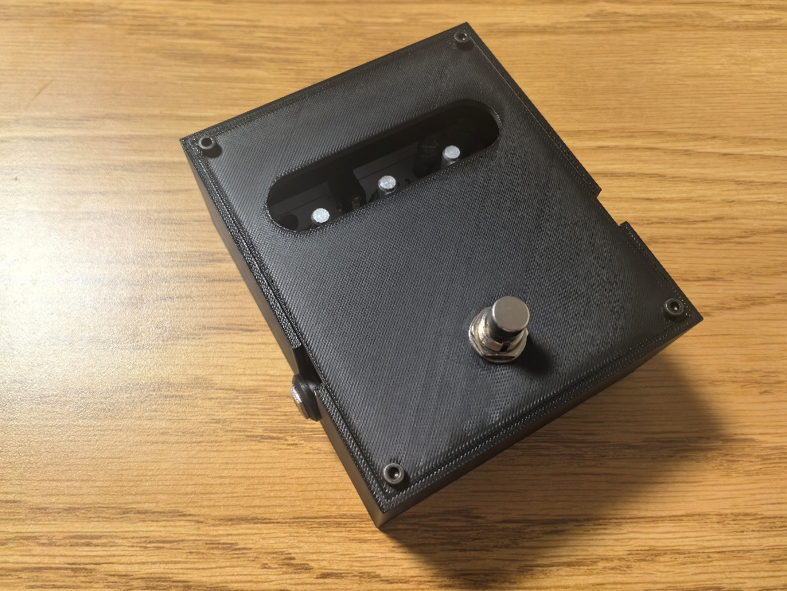
At a glance / 01
I used the Klon Centaur as a reference, translating its circuit into a PCB and designing an enclosure around the physical constraints of the board, controls, and audio connections.
Interactive / 02
The PCB assembly exported from KiCad as a STEP file. Drag to orbit, scroll to zoom, right-drag to pan.
The FreeCAD enclosure (enclosure.FCStd) can be added the same way after exporting it to STEP or GLB from FreeCAD (File → Export → STEP or use the Mesh Design workbench for STL/GLB). Drop the exported file next to this page and point a second viewer at it.
Process / 03
The most useful part of the project was not just making the circuit, but learning how electrical, mechanical, and assembly decisions affect one another.
01 — Circuit to PCB
I recreated the reference circuit in KiCad, assigned footprints to the electronic components, and arranged them into a rectangular PCB. My initial layout placed several components too close together, making wiring and soldering harder than necessary.
I revised the layout to create more working space, routed most connections on the front copper layer, used vias where needed, and added two M3 mounting holes to secure the board inside the enclosure.
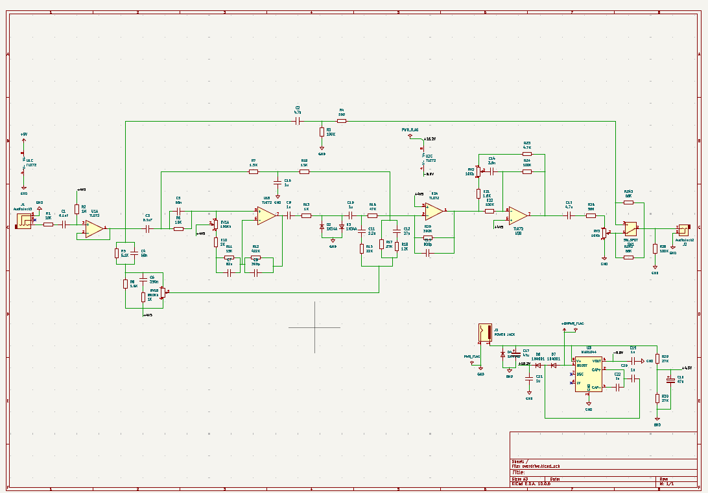
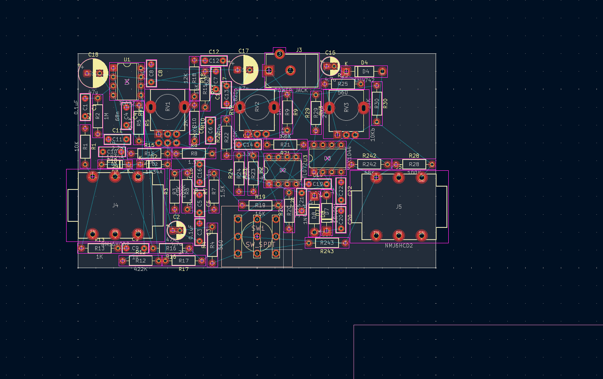
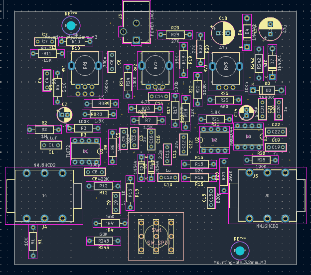
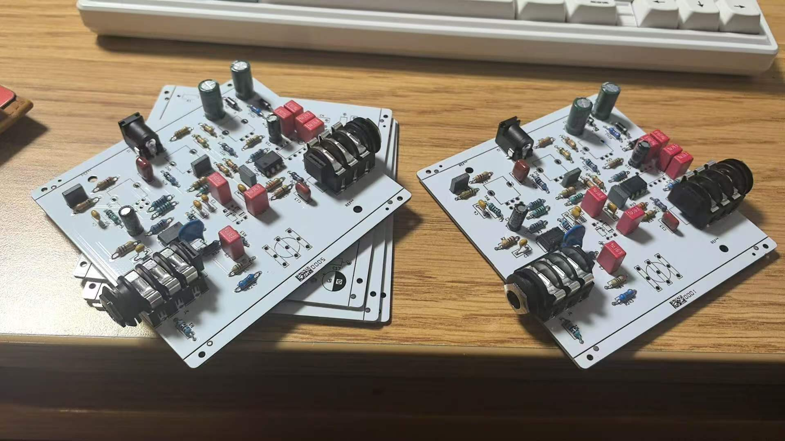
02 — Assembly & debugging
JLCPCB assembled the components that could be machine-placed. I sourced the remaining parts and completed the through-hole soldering and hardware integration using equipment at TechSpark.
A footprint mismatch meant the physical 3PDT footswitch did not align with the PCB pads. I connected its terminals to the corresponding board connections with nine female jumper wires. When the first test did not produce the expected overdrive, I checked the schematic and discovered that the labels +4.5V and +4V5 had been treated as separate nets in KiCad. I bridged the two nets with a wire on the back of the PCB, then tested the pedal again, confirming that it was working
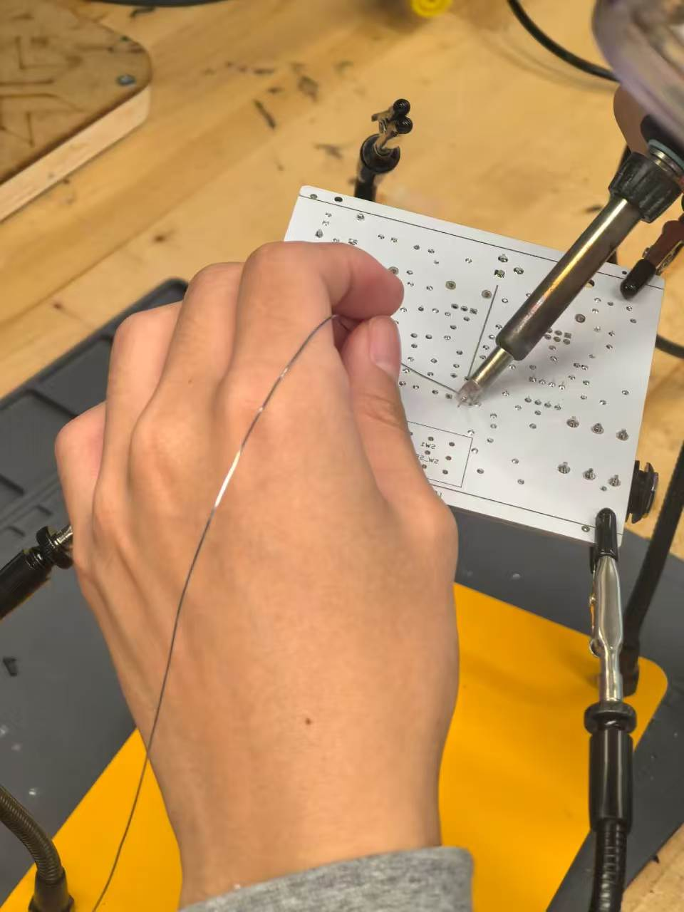
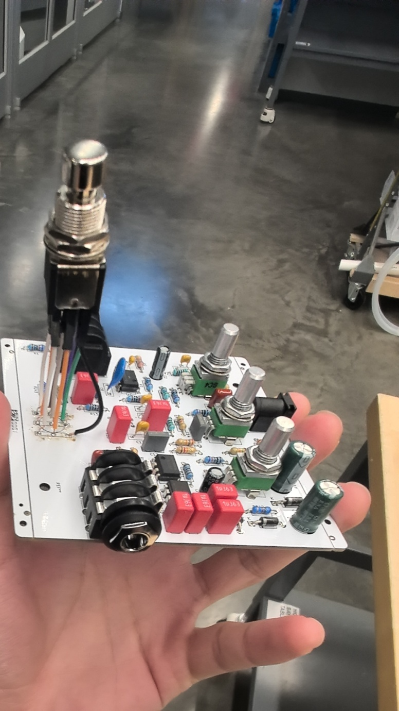
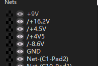
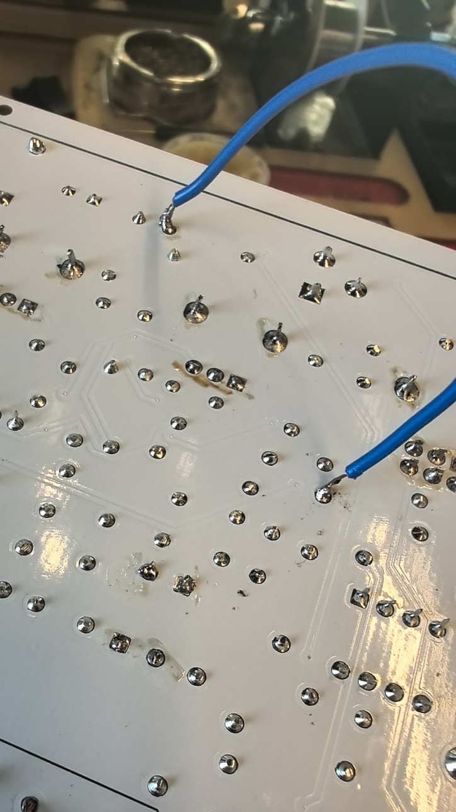
03 — Enclosure design
I modeled a box and a separate lid in FreeCAD. The enclosure includes U-shaped cutouts for the input and output jacks, a separate opening for the DC power jack, internal mounting posts for the PCB, and corner holes for M3 screws.
I printed the parts in PLA and installed six heat-set threaded inserts with a soldering iron. The inserts provide reusable metal threads, so the enclosure can be opened and reassembled without repeatedly cutting threads into the plastic. One fit issue remained: the potentiometer shafts were too short to protrude through the lid. So I designed a hole and left the controls recessed.
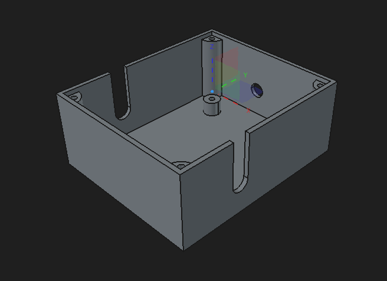
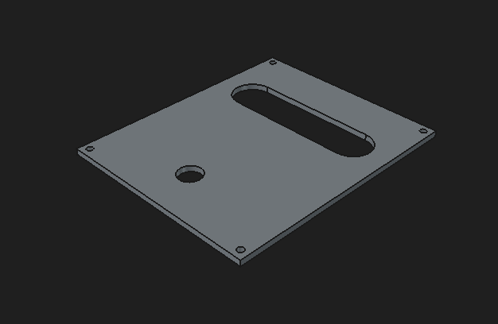
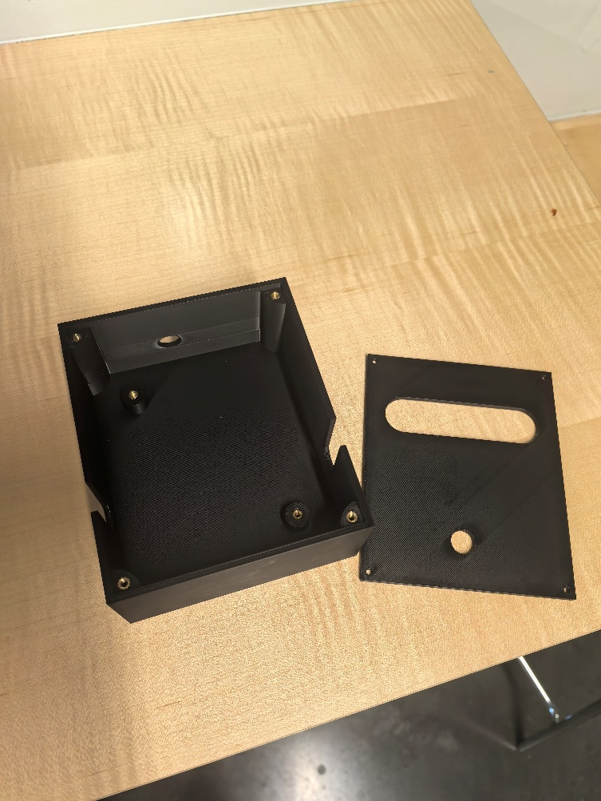
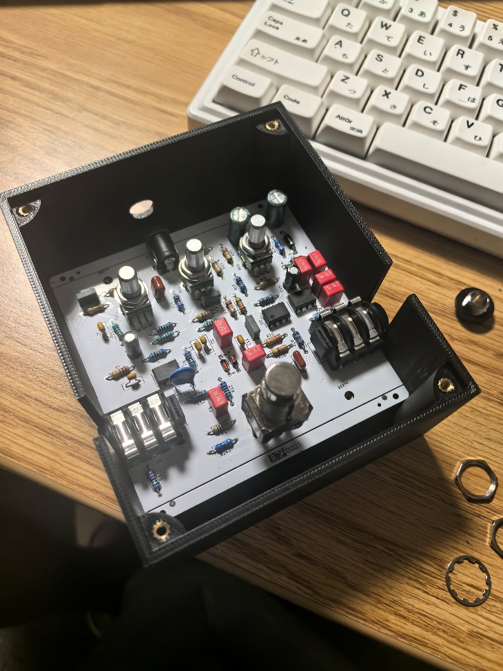
Reflection / 04
This project made the relationship between schematic correctness, footprint accuracy, component clearance, and enclosure geometry tangible. A circuit can look correct on screen while still being difficult to wire, impossible to mount, or incompatible with a purchased part.
If I revise the design, I would verify component dimensions and switch pin spacing against datasheets before routing, check net names consistently before fabrication, and prototype the control heights with the enclosure before printing the final lid.
“Klon Centaur Analysis · ElectroSmash Archive.” Mas-Effects.com, 2022. Read the circuit analysis ↗
West Warren, “Builder Profile: Klon’s Bill Finnegan.” Premier Guitar, 21 Jan. 2014. Read the profile ↗